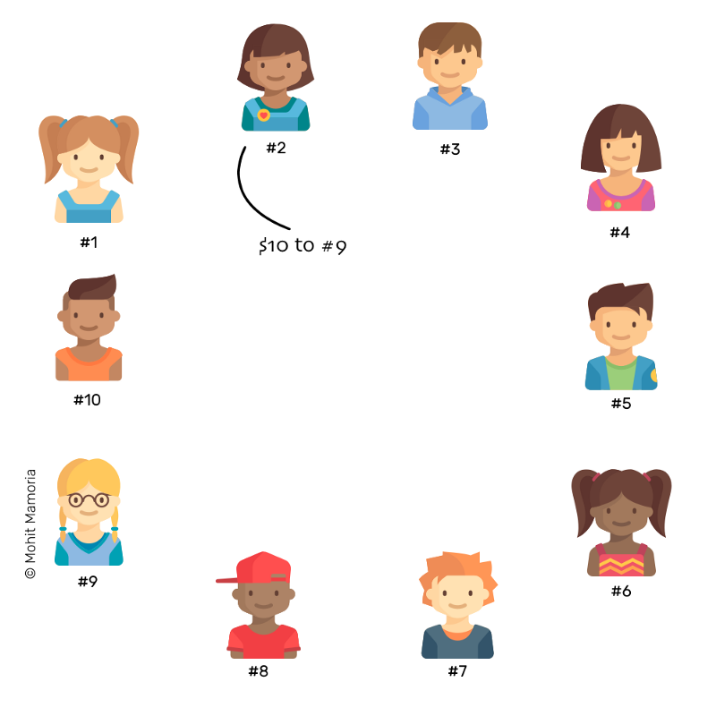
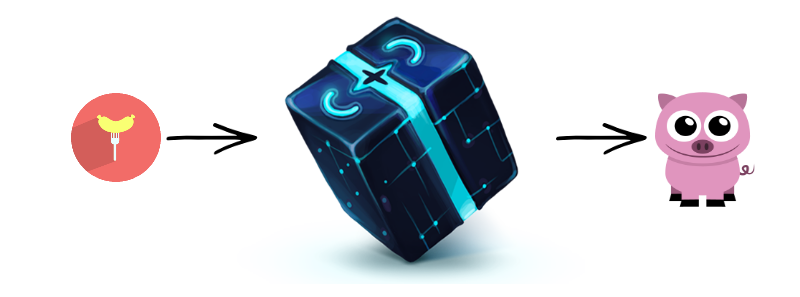
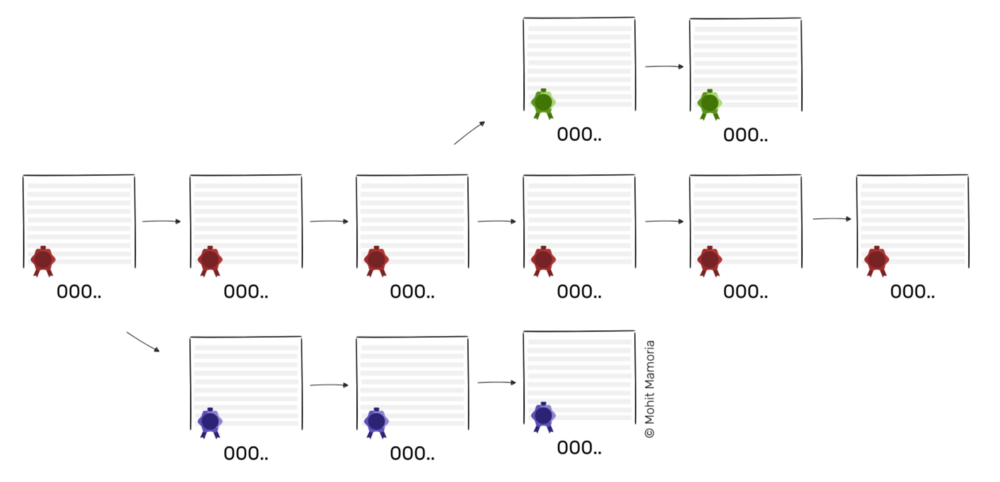

Mình sẽ bắt đầu bài viết này với một cái tên rất quen thuộc đối với mọi người trong những năm gần đây, đó là bitcoin. Được tạo ra vào năm 2009 bởi một người (nhóm?) có bí danh Satoshi Nakamoto, bitcoin nhanh chóng trở thành một cái tên hết sức nổi tiếng trong giới công nghệ cũng như trong giới tài chính.
Vậy bitcoin và blockchain có mối liên hệ gì với nhau? Bitcoin và blockchain có phải là một? Không. Tuy nhiên, chúng có mối liên hệ rất chặt chẽ. Khi bitcoin được phát hành dưới dạng mã nguồn mở, blockchain đã được gói cùng với bitcoin trong mã nguồn. Và vì bitcoin là ứng dụng đầu tiên của blockchain nên mọi người thường vô tình sử dụng "bitcoin" để có nghĩa là blockchain. Sự hiểu lầm này vẫn tồn tại phổ biến cho đến bây giờ, khi mà công nghệ blockchain đã được ứng dụng trong rất nhiều các ngành công nghiệp và công nghệ khác.
Lời tác giả (1): Bài viết được thực hiện dựa trên kiến thức cá nhân cũng như thông tin được tổng hợp từ nhiều nguồn (tham khảo nguồn ở cuối bài). Bài viết ảnh hưởng đến mình nhiều nhất là từ nguồn hackernoon, sẽ có rất nhiều thông tin và hình ảnh được trích dẫn, lược dịch từ nguồn này. Một số từ tiếng Anh sẽ không được dịch để đảm bảo ý nghĩa (hoặc người viết không biết dịch thế nào ^^). Trong trường hợp nội dung có sai sót rất mong có được góp ý dưới comment.
Lời tác giả (2): Blog này mình viết về công nghệ, đôi khi là góc nhìn cá nhân về một vấn đề nào đó. Bài viết này mình cũng sẽ viết tập trung về công nghệ. Nếu bạn đang tìm một bài nói về việc đầu tư bitcoin thế nào cho có lãi, thị trường bitcoin tương lai ra sao, tham gia thị trường này như thế nào ... thì có lẽ bài viết này không phải là thứ bạn đang mong muốn. Tuy nhiên, nếu bạn là một nhà đầu tư chưa có kiến thức gì về bitcoin, và bạn không muốn đầu tư vào một thứ mà bạn không hiểu gì, mình hi vọng những kiến thức mình chia sẻ sau đây sẽ giúp các bạn có tâm lý tốt hơn khi đầu tư vào thị trường này.
Màn dạo đầu về vấn đề tiền tệ và lòng tin
Bitcoin là chủ đề yêu thích của các phương tiện truyền thông trong thời gian gần đây, lượng người biết đến bitcoin cũng như đầu tư vào thị trường này càng ngày càng nhiều. Ngay cả những người chưa bao giờ hiểu về công nghệ, về kỹ thuật mật mã hay về blockchain ... cũng đang bàn tán về nó.
Bitcoin được tạo ra với ý tưởng về một loại tiền tệ vượt qua kiểm soát của chính phủ và đơn giản hóa các giao dịch trực tuyến bằng cách loại bỏ các bên trung gian để xử lý quá trình giao dịch.
Các giao dịch bitcoin được lưu trữ và thực hiện sử dụng một cuốn sổ cái được phân tán trên mạng ngang hàng. Blockchain là công nghệ nền tảng duy trì sổ cái giao dịch của bitcoin.
Chúng ta sẽ bắt đầu với câu chuyện về blockchain bằng một ví dụ về tiền tệ và giao dịch, dĩ nhiên công nghệ blockchain giải quyết được nhiều vấn đề khác, nhưng rõ ràng ví dụ về tiền thì thường dễ hiểu và nhiều cảm hứng hơn.

Giả sử bạn nợ thằng Joe một khoản và nó thì đang hết tiền, dĩ nhiên là nó sẽ đòi tiền bạn, bạn quyết định sẽ thôi lầy lội và chuyển khoản cho nó. Bạn mở iBanking lên, thực hiện lệnh chuyển tiền, ngân hàng kiểm tra số dư tài khoản, thực hiện việc chuyển tiền. Xong.
Về cơ bản, sẽ có đâu đó một bản ghi như thế này:

Trong trường hợp này, cả bạn và Joe đều tin tưởng vào ngân hàng để quản lý tài khoản của mình. Chẳng ngân hàng nào thực sự cầm tiền của bạn và gửi shipper đem cho Joe cả (ít nhất là ở thời đại này). Tất cả những gì cần thiết là một mục nhập trong sổ đăng ký hoặc cơ sở dữ liệu của ngân hàng mà bạn và Joe đều không kiểm soát hoặc sở hữu.
Tiền là vật ngang giá chung có tính thanh khoản cao nhất dùng để trao đổi lấy hàng hóa và dịch vụ nhằm thỏa mãn bản thân và mang tính dễ thu nhận ... Thông qua việc chứng thực các giá trị này dưới dạng của một vật cụ thể (Ví dụ như tiền giấy hay tiền kim loại) hay dưới dạng văn bản (dữ liệu được ghi nhớ của một tài khoản) mà hình thành một phương tiện thanh toán được một cộng đồng công nhận trong một vùng phổ biến nhất định. - wiki
Như vậy đối với ngân hàng, trên khía cạnh quản lý, tiền của bạn thực sự cũng chỉ là những con số đại diện và chúng ta chấp nhận tin tưởng những con số đó cũng như tin tưởng vào ngân hàng. Nói một cách tổng quát hơn, để thiết lập giao dịch, chúng ta phụ thuộc vào cá nhân thứ ba. Và đó cũng là vấn đề của các hệ thống hiện tại.
Điều gì sẽ xảy ra trong trường hợp "người thứ 3" không đáng tin cậy và cuỗm số tiền thật của chúng ta đi? Nếu cuốn sổ cái chứa thông tin tài khoản của bạn bị mất, bị hư hỏng? Nếu thằng cha nào đó ở ngân hàng vô tình hay hữu ý ghi nhầm 1000$ của bạn thành 100$? Dĩ nhiên, đó là ví dụ, trên thực tế bạn có nhiều cách để chứng thực số tiền với ngân hàng, ở đây, chúng ta nhấn mạnh việc rủi ro khi thực hiện giao dịch thông qua sự tin tưởng ở "người thứ 3".
Như vậy, thứ chúng ta cần là một hệ thống mà chúng ta có thể chuyển tiền không cần ngân hàng. Chúng ta có thể xây dựng được một hệ thống như thế không? Dĩ nhiên là có rồi. Các bạn biết rõ là bài viết đang muốn nói đến blockchain. Tuy nhiên hãy để cho mọi thứ thi vị hơn chút bằng cách đi chầm chậm từ bản chất vấn đề. ^^
Thay vì trao đổi tiền thật, chúng ta cũng cần một hệ thống quản lý những con số, những bản ghi, giống như của ngân hàng.
Bằng công nghệ blockchain, chúng ta có thể tự quản lý cuốn sổ cái chứa tài khoản và giao dịch của mình và mọi người.
Thực hiện giao dịch như thế nào?
Điều mấu chốt ở đây là, muốn thực hiện giao dịch, chúng ta phải giao dịch với những người cùng không tin tưởng vào hệ thống ngân hàng và tạm cho rằng hội, nhóm này có khả năng tự quản lý cuốn sổ cái chung.
Cần bao nhiêu người cho một nhóm như trên? Tối thiểu là 3, dĩ nhiên. Nếu 2 người tin tưởng nhau rồi thì chẳng có chuyện gì để bàn cả.
Giả sử chúng ta có 10 người nhé. Trên cơ sở 1 thỏa thuận chung giữa 10 người, họ có chi tiết về tài khoản của nhau nhưng lại không biết danh tính của người giữ tài khoản đó. Nghe hơi khó hiểu chút nhưng bạn có thể tưởng tượng đơn giản là bạn đang cầm sổ tài khoản của ai đó có mã số NOTE7749 mà không biết đích xác cuốn sổ này là của ai trong 9 người còn lại.

1. Hộp đựng tài liệu rỗng
Mỗi người đều sẽ có một hộp đừng tài liệu rỗng để bắt đầu. Hộp này để khi các giao dịch được thực hiện, mười cá nhân này có thể lưu trữ các trang giấy đã ghi lại giao dịch vào các hộp đựng. Tập hợp các trang này sẽ tạo thành một cuốn sổ cái riêng để theo dõi các giao dịch.
2. Khi thực hiện giao dịch
Tiếp theo, tất cả mọi người ngồi với một trang giấy trắng và một cây bút, sẵn sàng để viết bất kỳ giao dịch xảy ra.
Bây giờ, nếu người số 2 muốn gửi $10 đến số 9. Để thực hiện giao dịch, người số 2 nói với tất cả mọi người: "Tôi muốn chuyển $10 đến số 9. Tất cả mọi người, xin vui lòng ghi vào giấy."

Vậy là tất cả mọi người kiểm tra tài khoản của người có số thứ tự 2, nếu tài khoản đó có đủ tiền, mọi người đồng loạt ghi vào tờ giấy của họ như sau:
Giao dịch hoàn thành.
3. Giao dịch tiếp theo
Khi thời gian trôi qua, số giao dịch được tăng lên. Bất cứ khi nào họ muốn thực hiện một giao dịch, họ thông báo nó cho tất cả mọi người khác và mỗi người sau đó lại cập nhật lại bản ghi của mình.

Giao dịch được thực hiện cho đến khi 'hết giấy'. Giả sử một trang chỉ có chỗ ghi mười giao dịch thì ngay khi giao dịch thứ mười được thực hiện, mọi người đều đang ở dòng cuối cùng.
Để tiếp tục thực hiện giao dịch, tất cả mọi người phải cất hết những tờ giấy cũ vào hộp và chuẩn bị giấy mới.
4. Niêm phong bản ghi cũ
Trước khi đưa những tờ giấy - bản ghi cũ vào hộp, chúng ta cần phải khóa nó với một chìa khóa duy nhất mà tất cả mọi người trong mạng đều đồng ý rằng chìa khóa đó là an toàn. Bằng cách niêm phong nó, chúng ta sẽ đảm bảo rằng không ai có thể thay đổi nội dung của các bản ghi. Một khi trong hộp, nó sẽ luôn luôn ở trong hộp và được niêm phong. Nếu mọi người tin tưởng vào chìa khóa đồng nghĩa với việc mọi người tin tưởng vào nội dung của của các bản ghi được cất trong hộp. Chìa khóa - con dấu ở đây chính là mấu chốt của vấn đề.
Việc niêm phong bản ghi ở trên còn được gọi là 'đào', tuy nhiên ở bài viết này, chúng ta sẽ vẫn gọi là hành động 'niêm phong' hay 'khóa'.
Như vậy, thay vì tin tưởng vào người trung gian để thực hiện giao dịch, bây giờ chúng ta sẽ tin tưởng vào chìa khóa - hay con dấu khi thực hiện giao dịch.
Vấn đề niêm phong các bản ghi
Trước khi chúng ta tìm hiểu làm thế nào chúng ta có thể niêm phong các bản ghi, chúng ta sẽ tìm hiểu cách thức hoạt động của con dấu nói chung.
Chiếc hộp kỳ diệu
Hãy tưởng tượng một chiếc hộp vô cùng bí ẩn. Nếu bạn gửi vào bên trái hộp một vật, nó sẽ đẩy ra bên phải một vật khác.
Bạn có thể biết về 'Hash Function' hay 'hàm băm' hay 'hàm mã hóa' hoặc đại loại thế, tuy nhiên chúng ta sẽ vẫn dùng 'chiếc hộp kỳ diệu' cho dễ hiểu.
Giả sử, chúng ta gửi vào hộp 1 cái xúc xích, con lợn sẽ chạy ra ở bên phải hộp. Làm thế nào để cái xúc xích thành con lợn, chẳng ai biết cả.
Lời người viết (3): Ở bài gốc trên hackernoon dùng các chữ số đầu vào và chữ cái đầu ra, mình không thích thế lắm nên dùng các đồ vật và con vật cho dễ hiểu, sau khi đã có cái nhìn cơ bản, mình sẽ chuyển về với chữ và số giống như trên hackernoon.
Thêm nữa, việc đoán cái gì được đưa vào trong hộp phải là không thể, chúng ta khi thấy con voi chạy ra thì không thể đoán cái gì đã được nhét vào hộp, nhưng cứ khi nào nhét cái xúc xích vào, sẽ vẫn là con lợn chạy ra.

Thử nhét vào cái bút.

Chúng ta có con gà chạy ra.
Bây giờ, chúng ta có một câu hỏi như sau:
Liệu có thể đoán được phải nhét cái gì vào bên trái để có 1 con vật 4 chân chạy ra từ bên phải hộp.
Vấn đề là, chúng ta không thể đoán được khi nhét cái gì vào thì con gì sẽ chạy ra. Cách duy nhất để tìm trả lời được đó là thử tất cả mọi thứ trên đời cho đến khi có một con vật 4 chân chạy ra: chả giò, nem chua, đồng hồ, bút, thước, ba con sói ...

Cứ giả sử, nếu may mắn, sau khi nhét hàng núi đồ vào, con chuột chạy ra và 1 đáp án của chúng ta là cái usb.

Rất khó để tính toán đầu vào cho đầu ra, chúng ta tạm coi việc đó là không thể. Tuy nhiên, rất dễ dàng để xác minh nếu đầu vào cho đầu ra đúng yêu cầu. Bạn nghĩ câu trả lời là gì nếu ta ném cái usb vào? Một con vật 4 chân có chạy ra không? Xác minh rất dễ, chỉ cần ném thử cái usb vào và đếm số chân của con chuột chạy ra.
Thuộc tính quan trọng của chiếc hộp kỳ diệu:
"Cho một đầu ra, rất khó để đoán đầu vào, nhưng rất dễ để xác minh đầu vào có cho ra chính xác thứ ta mong đợi ở đầu ra không"
Sử dụng chiếc hộp kỳ diệu
Bây giờ quay lại vấn đề các bản ghi, các bản ghi thì là chữ và số vì vậy ta tạm rời xa các con vật vậy, hộp kỳ diệu bây giờ sẽ làm việc với những con số.
Hãy tưởng tượng chúng ta có hai hộp chứa bản ghi. Hộp đầu tiên chứa số 20893. Yêu cầu bây giờ là: "Tìm một con số khi kết hợp số trong hộp đầu tiên và cho vào chiếc hộp kỳ diệu sẽ cho chúng ta một dãy bắt đầu bằng ba chữ số 0?"

Bạn còn nhớ cách chúng ta tìm ra chiếc usb? Phải vậy, chúng ta sẽ thử lần lượt từng số cho đến khi tìm được đầu ra đúng yêu cầu. Sau vài nghìn lần thử, có thể hàng vạn hoặc hơn, chúng ta gặp một số, giả sử 21191 đi, mà khi thêm vào 20893 (21191 + 20893 = 42084) và cho vào hộp kỹ diệu thì đầu ra sẽ cho chúng ta một dãy thỏa mãn.

Trong trường hợp này, con số 21191 trở thành con dấu cho số 20893. Giả sử có một trang có số 20893 viết trên đó. Để đóng dấu trang đó (nghĩa là không ai có thể thay đổi nội dung của nó), chúng ta sẽ đặt một khóa có số niêm phong '21191' và khóa nó lại. Việc niêm phong được hoàn thành.
Số niêm phong được gọi là 'Proof Of Work', con số này là bằng chứng cho thấy các nỗ lực đã được tính toán.
Nếu ai đó muốn xác minh xem bản ghi đã bị thay đổi hay không, tất cả những gì người đó phải làm là thêm nội dung của bản ghi với số niêm phong và nhét vào hộp kỳ diệu. Nếu chiếc hộp đưa ra một dãy với bắt đầu với ba chữ số 0 thì tức là nội dung không bị ảnh hưởng. Nếu dãy xuất hiện không đáp ứng được yêu cầu, chúng ta có thể hủy bỏ bản ghi vì nội dung của nó đã bị xâm nhập và không còn hiệu lực.
Chúng ta sẽ sử dụng cơ chế niêm phong tương tự để đóng dấu tất cả các bản ghi và sắp xếp chúng trong các hộp chứa tương ứng.
Ghi chú: Thực ra việc sử dụng "một dãy với bắt đầu với ba chữ số 0" hoàn toàn là để đơn giản hóa vấn đề, trên thực tế mọi thứ phực tạp hơn nhiều lần.
Bây giờ, giả sử ai đó muốn thay đổi nội dung của trang, số niêm phong sẽ cho phép chúng ta biết liệu trang đó có bị thay đổi hay chưa.
Chúng ta sẽ quay lại thời điểm mọi người bắt đầu cất bản ghi vào hộp lưu trữ, khi mà tờ giấy đã ghi đủ 10 giao dịch.
Khi mọi người đều hết giấy, họ sẽ bắt đầu việc đóng dấu bằng cách tính toán con số niêm phong, người đầu tiên tìm được con số này sẽ thông báo cho tất cả mọi người.

Ngay lập tức khi nghe thấy ai đó đọc số niêm phong, mọi người sẽ dừng việc tính toán lại và kiểm tra số niêm phong nghe được, nếu số này hợp lệ, tất cả mọi người sẽ niêm phong tài liệu lại bằng số này.
Vậy điều gì sảy ra nếu ai đó nói ra con số đầu tiên nhưng con số này không hợp lệ? Trường hợp như vậy xảy ra rất thường xuyên với những lý do có thể là:
- Người đó nghe sai một giao dịch
- Người đó ghi sai một giao dịch
- Người đó cố ý làm sai lệch giao dịch
Dù lý do gì đi nữa, để tiếp tục thì người đó chỉ có một cách duy nhất đó là copy lại giấy của người khác. Nếu anh ta không đưa trang của anh vào hộp đựng tài liệu, anh ta không thể tiếp tục viết thêm các giao dịch nữa.
Bất kể con số niêm phong là gì, khi được đa số đồng ý, sẽ trở thành con số niêm phong hợp lệ.
Vậy tại sao tất cả mọi người lại bỏ công sức để tính toán khi họ biết ai đó sẽ tính toán và thông báo cho họ? Tại sao không ngồi im và đợi kết quả của người khác?
Câu trả lời đó là tiền thưởng. Tất cả mọi người là thành viên của nhóm đều đủ điều kiện nhận phần thưởng. Người đầu tiên tính số niêm phong được khen thưởng bằng tiền cho những nỗ lực của anh ta.
Đó là cách bitcoin ra đời và hoạt động như là đơn vị tiền tệ đầu tiên được giao dịch trên blockchain.
Để giữ cho mọi người làm việc, mọi người sẽ được trao thưởng bitcoin.
Coi một trang giấy để ghi giao dịch làm một khối (Block), hộp đựng tài liệu như một danh sách các bản ghi (Chain), chúng ta sẽ có một "BlockChain"
Chưa hết, chúng ta có một vấn đề cần phải giải quyết.
Bây giờ giả sử một ai đó muốn gian lận và quay lại thay đổi thông tin một giao dịch nào đó đã được cất trong hộp, dĩ nhiên con số niêm phong sẽ tố cáo việc bản ghi đã bị thay đổi, nhưng nếu anh ta tính toán lại cả con số niêm phong?

Để tránh việc con số niêm phong bị tính toán lại, thay vì chỉ đưa vào hộp kỳ diệu 2 thông số là mã giao dịch và con số niêm phong hợp lệ, bây giờ ta sẽ yêu cầu phải thêm một thông số nữa vào hộp kỳ diệu, đó là dãy đầu ra được tính toán của giao dịch trước đó.
Với thủ thuật này, chúng ta đảm bảo rằng mọi trang đều bị phụ thuộc vào trang trước của nó. Do đó, nếu ai đó muốn sửa đổi một trang thì cũng phải thay đổi nội dung và con số niêm phong của tất cả các trang sau đó để giữ cho toàn bộ chuỗi là hợp lệ.
Nếu một trong mười người cố lừa dối và sửa đổi nội dung của blockchain (thư mục chứa các trang có danh sách giao dịch), anh ta sẽ phải điều chỉnh rất nhiều trang và tương ứng với việc phải tính toán số niêm phong mới số cho tất cả các trang sau đó, anh ta có thể tạo ra một chuỗi giao dịch khác với mọi người. Tuy nhiên độ khó của việc tìm kiếm số niêm phong khiến cho chuỗi của anh ta sẽ không bao giờ đuổi kịp chuỗi của 9 người còn lại.
Như vậy, chúng ta có thể kết luận:
Chuỗi dài nhất là chuỗi hợp lệ

Vậy, điều gì xảy ra nếu thay vì một người có ý định xấu, có tới 6 người có ý định xấu?
Đây là một điểm yếu và là một lỗ hổng về mặt cấu trúc của bitcoin và blockchain. Khi mà phần lớn các cá nhân trong mạng quyết định không trung thực và ăn gian phần giao dịch còn lại của mạng, toàn bộ giao thức sẽ đổ vỡ.
Về cơ bản, mô hình bitcoin được xây dựng trên giả định rằng đa số đám đông luôn luôn là trung thực. Trong trường hợp một cuộc tấn công như thế diễn ra thành công, chắc chắn sự tin tưởng vào đồng tiền sẽ bị mất và giá trị của một đồng tiền sẽ giảm nhanh chóng.
51% attack - tấn công 51%
Làm thế nào để những người có ý định xấu có toàn quyền kiểm soát mạng?
Không hẳn toàn bộ. 51% mạng là đủ.
Như một hệ quả của mô hình tin tưởng đám đông đã trình bày ở các phần trước đó. Khi một nhóm người nắm được 51% mạng lưới, họ có thể ngăn các giao dịch mà họ chọn không xác nhận, làm cho chúng không hợp lệ, ngăn cản mọi người gửi bitcoin giữa các địa chỉ. Họ cũng có thể đảo ngược các giao dịch mà họ gửi trong thời gian họ kiểm soát được và họ có thể ngăn không cho các thợ mỏ khác tìm thấy bất kỳ khối bitcoin nào trong một khoảng thời gian.
Tuy nhiên họ vẫn không thể đảo ngược được những giao dịch từ đầu hay tạo ra những đồng tiền mới hoặc ăn cắp tiền từ ví của người khác. Dẫu vậy, việc này có thể gây ra một sự hoảng loạn trên thị trường và sẽ trực tiếp đe doạ việc sử dụng bitcoin như là một loại tiền tệ trực tuyến.
Một cuộc tấn công 51% là hoàn toàn khả thi, đặc biệt là với sự gia tăng của các mỏ khai thác bitcoin lớn. Ở mức độ khai thác và độ khó hiện tại, một chính phủ có thể dễ dàng tiến hành một cuộc tấn công 51%.
Trên thực tế thì những trường hợp tương tự đã từng xảy ra.
Ghash.io ghash.io đã nắm hơn 50% sức mạnh tính toán của mạng bitcoin vào tháng 7 năm 2014, sau đó họ có cam kết trong một tuyên bố rằng họ sẽ giảm năng suất xuống và sẽ không đạt 40% năng suất của toàn bộ hệ thống trong tương lai.
Krypton và Shift Krypton và Shift, hai blockchain dựa trên nền tảng ethereum, bị tấn công 51% vào tháng 8 năm 2016.
Genesis block
Tất cả các khối trong mạng lưới đều liên kết tới một khối được giao dịch trước đó. Vậy, khối đầu tiên thì liên kết với cái gì và nó được tạo ra như thế nào?
Thực tế thì các khối đầu tiên này thường được tạo bằng tay (hard-code). Trong trường hợp của bitcoin, khối này được gọi là Genesis Block. Genesis Block hầu như luôn luôn được mã hóa cứng trong các phần mềm. Đây là một khối đặc biệt vì nó không liên kết đến một khối trước nó.
Khối Genesis chứa một thông điệp ẩn trong giao dịch coinbase - nó nói rằng ""The Times 03/Jan/2009 Chancellor on brink of second bailout for banks." Đây rõ ràng là một thông điệp từ Satoshi Nakomoto với dụng ý chỉ ra những vấn đề với chính sách cứu trợ của chính phủ hiện nay đối với ngân hàng quá lớn cũng như vấn đề nguy hiểm về đạo đức.
Đại loại thì nó sẽ như thế này:
00000000 01 00 00 00 00 00 00 00 00 00 00 00 00 00 00 00 ................
00000010 00 00 00 00 00 00 00 00 00 00 00 00 00 00 00 00 ................
00000020 00 00 00 00 3B A3 ED FD 7A 7B 12 B2 7A C7 2C 3E ....;£íýz{.²zÇ,>
00000030 67 76 8F 61 7F C8 1B C3 88 8A 51 32 3A 9F B8 AA gv.a.È.ÈŠQ2:Ÿ¸ª
00000040 4B 1E 5E 4A 29 AB 5F 49 FF FF 00 1D 1D AC 2B 7C K.^J)«_Iÿÿ...¬+|
00000050 01 01 00 00 00 01 00 00 00 00 00 00 00 00 00 00 ................
00000060 00 00 00 00 00 00 00 00 00 00 00 00 00 00 00 00 ................
00000070 00 00 00 00 00 00 FF FF FF FF 4D 04 FF FF 00 1D ......ÿÿÿÿM.ÿÿ..
00000080 01 04 45 54 68 65 20 54 69 6D 65 73 20 30 33 2F ..EThe Times 03/
00000090 4A 61 6E 2F 32 30 30 39 20 43 68 61 6E 63 65 6C Jan/2009 Chancel
000000A0 6C 6F 72 20 6F 6E 20 62 72 69 6E 6B 20 6F 66 20 lor on brink of
000000B0 73 65 63 6F 6E 64 20 62 61 69 6C 6F 75 74 20 66 second bailout f
000000C0 6F 72 20 62 61 6E 6B 73 FF FF FF FF 01 00 F2 05 or banksÿÿÿÿ..ò.
000000D0 2A 01 00 00 00 43 41 04 67 8A FD B0 FE 55 48 27 *....CA.gŠý°þUH'
000000E0 19 67 F1 A6 71 30 B7 10 5C D6 A8 28 E0 39 09 A6 .gñ¦q0·.\Ö¨(à9.¦
000000F0 79 62 E0 EA 1F 61 DE B6 49 F6 BC 3F 4C EF 38 C4 ybàê.aÞ¶Iö¼?Lï8Ä
00000100 F3 55 04 E5 1E C1 12 DE 5C 38 4D F7 BA 0B 8D 57 óU.å.Á.Þ\8M÷º..W
00000110 8A 4C 70 2B 6B F1 1D 5F AC 00 00 00 00 ŠLp+kñ._¬....
Trong phiên bản ban đầu của bitcoin, nó được miêu tả như sau:
GetHash() = 0x000000000019d6689c085ae165831e934ff763ae46a2a6c172b3f1b60a8ce26f
hashMerkleRoot = 0x4a5e1e4baab89f3a32518a88c31bc87f618f76673e2cc77ab2127b7afdeda33b
txNew.vin[0].scriptSig = 486604799 4 0x736B6E616220726F662074756F6C69616220646E6F63657320666F206B6E697262206E6F20726F6C6C65636E61684320393030322F6E614A2F33302073656D695420656854
txNew.vout[0].nValue = 5000000000
txNew.vout[0].scriptPubKey = 0x5F1DF16B2B704C8A578D0BBAF74D385CDE12C11EE50455F3C438EF4C3FBCF649B6DE611FEAE06279A60939E028A8D65C10B73071A6F16719274855FEB0FD8A6704 OP_CHECKSIG
block.nVersion = 1
block.nTime = 1231006505
block.nBits = 0x1d00ffff
block.nNonce = 2083236893
CBlock(hash=000000000019d6, ver=1, hashPrevBlock=00000000000000, hashMerkleRoot=4a5e1e, nTime=1231006505, nBits=1d00ffff, nNonce=2083236893, vtx=1)
CTransaction(hash=4a5e1e, ver=1, vin.size=1, vout.size=1, nLockTime=0)
CTxIn(COutPoint(000000, -1), coinbase 04ffff001d0104455468652054696d65732030332f4a616e2f32303039204368616e63656c6c6f72206f6e206272696e6b206f66207365636f6e64206261696c6f757420666f722062616e6b73)
CTxOut(nValue=50.00000000, scriptPubKey=0x5F1DF16B2B704C8A578D0B)
vMerkleTree: 4a5e1e
Tham khảo:
- CNN - What is bitcoin?
- Bitcoin.it - How bitcoin works
- IBM - The difference between bitcoin and blockchain for business
- Hackernoon - WTF is the blockchain
- Investopedia - 51%-attack
- Coindesk - Are 51% Attacks a Real Threat to Bitcoin?
- Genesis block
Header cover: Forexnewsnow